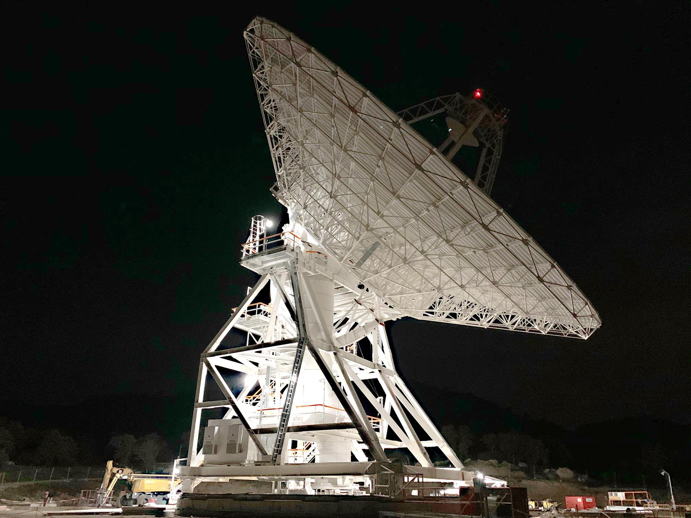
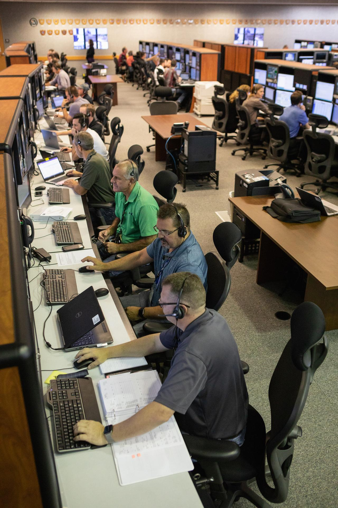

We keep crews healthy where help is hours away.
When a crew is on the Moon or bound for Mars, the nearest hospital is millions of miles behind them. SSAI applies nearly five decades of space-environment data, modeling, and AI/ML to human health, so the systems that protect a crew work the first time, and every time.
Where space meets human health.
SSAI's Health Initiative carries one charge: keep crews healthy and mission-capable when Earth is hours, not minutes, away.
For nearly five decades we have measured the space environment for the agencies that explore and defend. We now apply that body of data, our physics-based modeling, and AI/ML to the human body, building the decision tools that crews will depend on across Artemis and deep space. The work is led by a physician CEO, joining clinical judgment to the engineering discipline behind every system we deliver.
This is a new practice for SSAI, stood up co-equal to Science, Technology, and Engineering. We are building it the way we build everything: grounded in data, accountable for outcomes, and ready for the moment the mission cannot fail.
Three fronts, one crew.
We organize the practice around the three things that keep a crew alive and effective far from home: their performance, the decisions made for their care, and the radiation environment they fly through.
Human Performance & Crew Health
We model how the space environment acts on the human body and turn physiological monitoring into early, actionable risk signals, so flight surgeons and crews see a problem forming before it becomes an emergency.
Explore →Autonomous Clinical Decision Support
We build air-gapped, agentic medical AI that supports real-time crew care when Earth is too far to ask. Our CDSS reasons through symptoms, history, and onboard resources to recommend a course of action on the spot.
Explore →Space Radiation & Environmental Risk
We forecast and model the radiation crews fly through, from galactic cosmic rays to solar particle events, translating space-weather science into dose estimates and shelter guidance that protect the people on the mission.
Explore →A doctor on board, even when Earth cannot answer.
Air-gapped clinical decision support for deep space
SSAI's Disconnected Clinical Decision Support System is an air-gapped, agentic medical AI built on Microsoft Azure AI Foundry. It supports real-time crew medical decisions when communication with Earth is delayed by 1.3 seconds at the Moon and 4 to 24 minutes at Mars, the windows in which an emergency cannot wait for the ground.
Because it runs disconnected, the system reasons locally over crew history, presenting symptoms, and the medical resources actually on the vehicle, then recommends a course of action without a round trip to mission control. It is designed for the moment the link is down and the decision still has to be right.

NASA / Jet Propulsion LaboratoryBuilt for the missions ahead, on data behind us.
Artemis returns crews to the Moon and sets the path to Mars. On those missions, distance turns routine care into a self-contained problem.
SSAI brings something most newcomers to crew health do not: a long record of measuring the very environment that drives the risk. The same space-weather, atmospheric, and instrument science we have delivered for NASA and NOAA for decades now feeds the models that keep a crew safe far from any help.
We pair that heritage with modern AI/ML and a physician at the head of the company, so the practice answers to clinical reality and engineering rigor at once.

NASAA single accountable authority for delivery.
SSAI is appointing a dedicated Practice Lead for Health. The role brings named program depth and serves as the single accountable authority for delivery across the practice, from crew health and clinical decision support to space radiation risk.
We hold this seat to a standard, not a hire date. The appointed lead will carry directly relevant program experience and own the outcome the customer is buying, so there is always one name behind the commitment. This block is a placeholder, ready for the leader who will fill it.
Keeping crews healthy where help is hours away.
SSAI's Health practice joins nearly five decades of space-environment science to modern medical AI, building the decision tools Artemis and deep space will depend on. Talk to us about putting them to work on your mission.